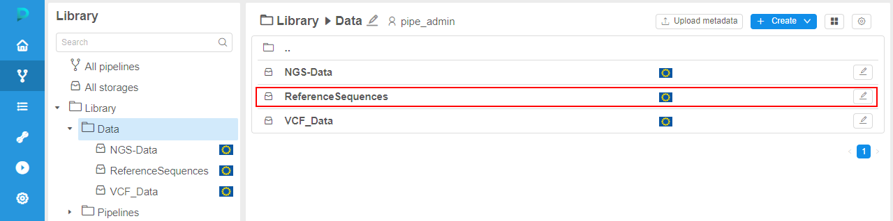
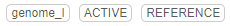
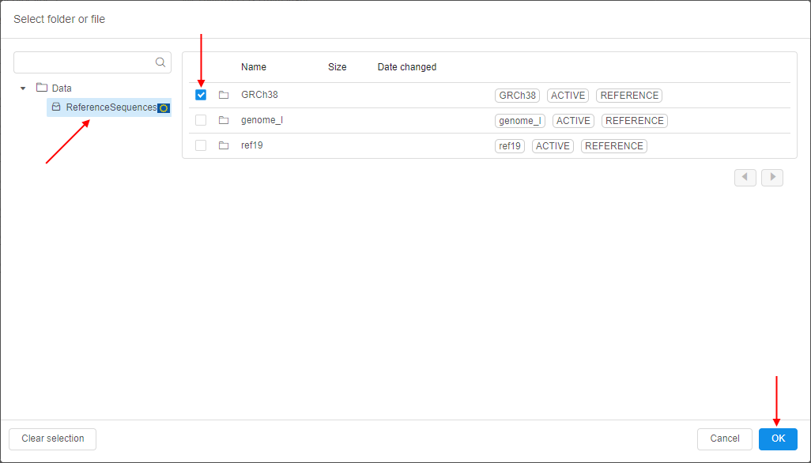

8.14. Omics storages
Cloud Pipeline supports AWS HealthOmics Storages.
These are specialized storages that allow to store Omics data.
There are two types of AWS HealthOmics Storages:
- reference store - for storing genome references
- sequence store - for storing genomics files (e.g., BAM, CRAM, FASTQ)
Depending on the store type, management and abilities will vary.
To create a Storage in a Folder you need to have WRITE permission for that folder and the ROLE_STORAGE_MANAGER role. For more information see 13. Permissions.
Reference store
Specialized storage for storing raw genome references.
Create reference store
Note: please note that for each Cloud Region, only one reference store can be created.
To create reference store:
- Navigate to the folder where you want to create reference storage.
- Click + Create → Storages → Create AWS HealthOmics Store:

- The pop-up of the AWS HealthOmics Storage creation will appear:

- Specify a name of the creating store and select the service type as
Reference store:
- Specify a description if necessary.
- Click the Create button to confirm.
- Reference store will appear in the folder:

View and edit content of reference store
Reference store has a flat structure:
- on the first level, there are only folders, where each folder presents a reference
- on the second level (inside the folder of each reference), there are only files of the reference itself and its index
- nested folders are not supported

Inside the reference folder:

In the row of the reference file/its folder, there is a set of labels, e.g.:

- reference name
- state of the file
- type of the content (
REFERENCE)
Possible actions in a reference store:
- Import new reference - load a reference from the data storage
- Download reference - download reference files to the local workstation
- Delete reference
Import reference
Note: to load a reference into a reference store, it shall be previously loaded to the s3 bucket available on the Cloud Pipeline Platform.
To load a reference:
- Open the reference store.
- Click the Import button:

- Import form will appear:

- Specify mandatory fields:
- Name - reference genome name
- Subject id - source's subject ID
- Sample id - source's sample ID
- If necessary, specify optional fields:
- Description - reference description
- Generated from - reference details
- Select the reference source file:
- click the folder icon near the Source file label:

- the pop-up to select a file from a data storage will appear:
- select a reference file in one of the regular storages available in the Cloud Pipeline Platform, e.g.:

- click the OK button to confirm selection
- selected file will be shown near the Source file label:

- click the folder icon near the Source file label:
- Once all fields are specified, click the Import button:

- Attributes panel with the section of import jobs will be opened automatically on the right side:
At this panel, you can check the state of the file import jobs:- set dates (From and To) and desired state (select from the list)
- click the Search button, results will be shown as the job IDs list, e.g. to find newly completed jobs:
- When the import is already completed, reference will appear in the storage:
- Click the reference, to display reference files:

As you can see, reference folder contains the reference file itself (source) and automatically created index (index).
Note: to show/hide import jobs section, you may use the special menu in the upper side of the store:

Delete reference
Note: you may remove only the reference entirely, separate reference files can not be removed.
To remove a reference:
- Click the Delete button in a reference row, e.g.:

- Confirm the deletion in the appeared pop-up:
- Reference will be permanently removed.
Sequence store
Specialized storage for storing different types of genomics files - currently, these are BAM, CRAM, UBAM, FASTQ.
Create sequence store
To create sequence store:
- Navigate to the folder where you want to create sequence storage.
- Click + Create → Storages → Create AWS HealthOmics Store:
- The pop-up of the AWS HealthOmics Storage creation will appear:
- Specify a name of the creating store and select the service type as
Sequence store:
- Specify a description if necessary, then click the Create button to confirm:

- Sequence store will appear in the folder:

View and edit content of sequence store
Sequence store has a flat structure:
- on the first level, there are only folders, where each folder presents a separate genomic sequence
- on the second level (inside the folder of each sequence), there are only sequence genomic files - depending on the format, these can be one (for example, a single UBAM file) or two files (for example, a BAM file and its index)
- nested folders are not supported
Inside the sequence folder, there are sequence files:
In the row of the sequence file/folder, there is a set of labels, e.g.:

- sequence name
- state of the file
- type of the content (e.g.
FASTQ) - sample id
- subject id
Possible actions in a sequence store:
- Import new sequence - load a sequence from the data storage
- Upload sequence - upload a sequence from the local workstation
- Download sequence - download a sequence to the local workstation
- Delete sequence
Import sequence
Note: to load a sequence into a sequence store, it shall be previously loaded to the s3 bucket available on the Cloud Pipeline Platform.
To load a sequence:
- Open the sequence store.
- Click the Import button:

- Import form will appear:

- Specify mandatory fields:
- Name - sequence name
- Subject id - source's subject ID
- Sample id - source's sample ID
- If necessary, specify optional fields:
- Description - sequence description
- Generated from - sequence details
- From the corresponding dropdown list, select the type of a source file you want to load, e.g.:
- Select the sequence source file:
- click the folder icon near the Source file label:
- the pop-up to select a file from a data storage will appear:
- select a sequence file in one of the regular storages available in the Cloud Pipeline Platform, e.g.:

- click the OK button to confirm selection
- selected file will be shown near the Source file label:

- click the folder icon near the Source file label:
- Additional field for a second source file will appear:

You may add such additional file similarly as described at the previous step, e.g.:

- If necessary, you may link a sequence with a reference from the reference store:
- click the folder icon near the Reference path label:

- in the appeared pop-up, select a reference from the reference store, e.g.:
 - click the OK button to confirm selection
- click the folder icon near the Reference path label:
- Once all fields are specified, click the Import button:

- Attributes panel with the section of import jobs will be opened automatically on the right side:
At this panel, you can check the state of the file import jobs:- set dates (From and To) and desired state (select from the list)

- click the Search button, results will be shown as the job IDs list, e.g. to find newly completed jobs:

- set dates (From and To) and desired state (select from the list)
- When the import is already completed, sequence will appear in the storage:

- Click the sequence, to display sequence files:

As you can see, sequence folder contains files named by the format:sourceplus the index.
Note: to show/hide import jobs section, you may use the special menu in the upper side of the store:
Upload sequence
To upload a sequence:
- Open the sequence store.
- Click the Upload button:
- Upload form will appear:

- Select the type of a source file you want to upload, e.g.:

- Select the sequence source file from your local workstation:
- click the Upload source file button:
- the OS pop-up to select a file will appear
- choose a sequence file and confirm, e.g.:
- selected file will be shown near the Upload source file button:
- click the Upload source file button:
- Additional button for a second source file will appear:

You may add such additional file similarly as described at the previous step, e.g.:

- If necessary, you may link a sequence with a reference from the reference store:
- click the folder icon near the Reference label:
- in the appeared pop-up, select a reference from the reference store, e.g.:
- click the OK button to confirm selection
- click the folder icon near the Reference label:
- Specify mandatory fields:
- Name - sequence name
- Sample id - source's sample ID
- Subject id - source's subject ID
- If necessary, specify optional fields:
- Description - sequence description
- Generated from - sequence details
- Once all fields are specified, click the Upload button:

- The upload will take some time:

- Then, the pop-up will be automatically closed, sequence will appear in the storage:
- Please note, that the upload may take extra time - during this period state of the sequence will be shown as
PROCESSING_UPLOAD, download button will not be shown:

- When the upload is already completed, sequence state will change to
ACTIVEand download button near will appear:

Download sequence
To download at once all files of the sequence to the local workstation:
- Click the Download button in a sequence row.
- Download will be start automatically (please note that files will be loaded separately, not as an archive):

To download specific sequence file to the local workstation:
- Open the sequence folder.
- Click the Download button in a row of the sequence file.
- Download of the selected file will be start automatically:
Delete sequence
Note: you may remove only the sequence entirely, separate sequence files can not be removed.
To remove a sequence:
- Click the Delete button in a sequence row, e.g.:

- Confirm the deletion in the appeared pop-up:
- Sequence will be permanently removed.
Manage store
To edit reference or sequence store:
- Click the gear icon in the right upper corner of the store page.
- The settings pop-up will appear, e.g.:
Here, you can:
- edit store alias and description - specify new value(s) and click the Save button
- grant store permissions - for more details see the section 13. Permissions
- delete a store - for more details the section 8.5. Delete Data Storage
Manage via the CLI
You can also manage AWS HealthOmics Storages and their data via CLI.
Currently, the following CLI functionality is supported for AWS HealthOmics Storages:
- store creation - using
pipe storage createcommand:
Note: to specify the storage type during the creation (with
-t|--typeoption) use the following values -AWS_OMICS_REF(for reference store) andAWS_OMICS_SEQ(for sequence store). - store listing - using
pipe storage lscommand:
Note: to specify the storage path, use
omicsCloud prefix. - moving store to another folder - using
pipe storage mvtodircommand:
- store deletion - using
pipe storage deletecommand:
-
genomic data uploading - using
pipe storage cp <source> <destination>command, where:<source>- path to genomic data file(s) from the existing data storage registered in the Cloud Pipeline platform or from your local workstation<destination>- AWS HealthOmics Storage path

Note: for loading genomic data, you shall use the option
-a|--additional-optionsto specify arguments of the data file:- name - genomic file name
- subject_id - source's subject ID
- sample_id - source's sample ID
- file_type - type of the loading file
-
download genomic data - using
pipe storage cp <source> <destination>command, where:<source>- path to genomic data in AWS HealthOmics Storage (folder or file)<destination>- path on your local workstation
Usage
AWS HealthOmics Storages can not be mounted to the running instances as regular storages.
But these storages (and their data) can be used via pipeline's parameters - for more details see the corresponding section.
You may use data from AWS HealthOmics Storages in 2 types of parameters:
- Path parameter:
- select the corresponding parameter type from the list:

- click the folder icon in the appeared parameter field:

- in the pop-up, select a reference or sequence store, e.g.:

- then, you may select specific genomic data or the whole AWS HealthOmics Store:

- an example of the whole selected bucket as the path parameter value:
- select the corresponding parameter type from the list:
- Input parameter:
- select the corresponding parameter type from the list:

- click the input icon in the appeared parameter field:

- in the pop-up, select a reference or sequence store, e.g.:
- then, you may select specific genomic data, e.g.:

- an example of the selected reference as the input path parameter's value:
- select the corresponding parameter type from the list: